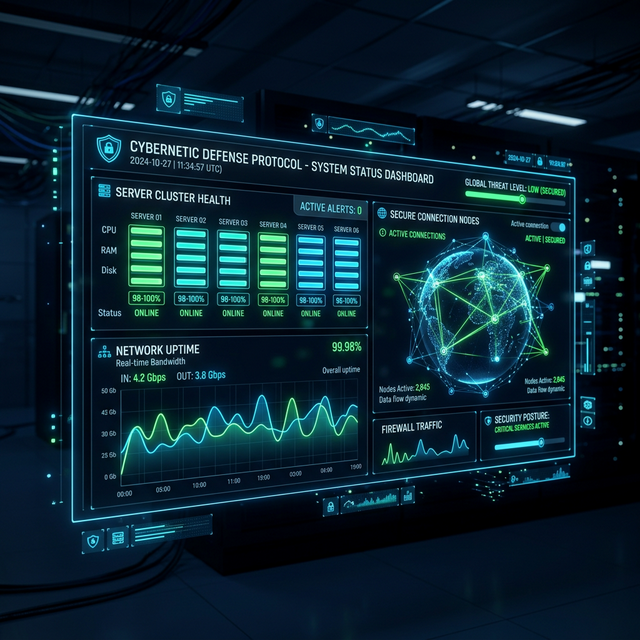

Live monitoring of backend modules, VM orchestration, telemetry ingestion, and analysis pipelines. All core services are operational and ready for research and threat intelligence workflows.

99.99% Uptime (Last 30 Days)
100% Uptime (Last 30 Days)
100% Uptime (Last 30 Days)
99.98% Uptime (Last 30 Days)
100% Uptime (Last 30 Days)
Resolved - High-frequency attack telemetry caused ingestion delays. Backend auto-scaled ingestion layer and restored normal operation within 12 minutes.
Completed - Successfully upgraded orchestration logic for faster VM launches and improved session mapping. No downtime observed.